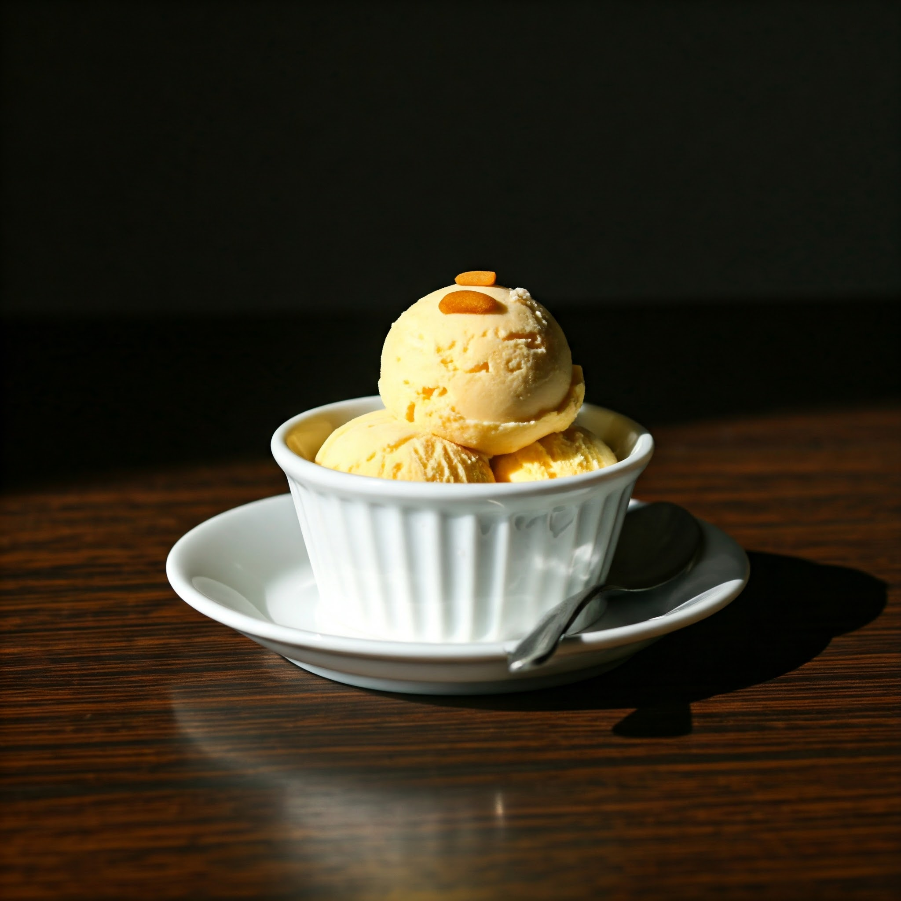

Sitaphal Icecream
Price: 89 /-
Description:Sitaphal (custard apple) ice cream is a tropical delight that captures the unique sweetness and creamy texture of the beloved fruit in frozen form. Made by blending the pulp of ripe sitaphal with a rich, creamy base, this dessert offers a refreshing and naturally sweet flavor profile. The ice cream often retains small, soft bits of the fruit, adding texture and enhancing the experience of savoring the custard apple's signature taste. Perfect for warm days, this exotic treat is a favorite among fruit lovers and a delicious way to enjoy sitaphal's tropical charm.
Order Now